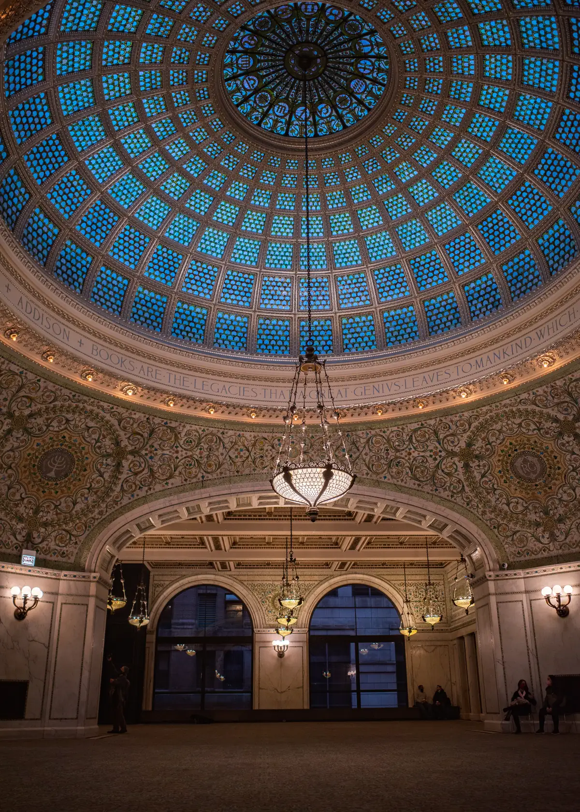

Proposal · The Echelon V0
Intentionally simple and elegant.
The public website and the private Member Portal for The Echelon, built together and launched in six weeks.


Joe,
Thanks for sending the V0 document, and for the time with John. It gave us a clear brief to work from.
What follows is how we'd build V0: the public website and the private Member Portal, launched together. It's built from three things: your document, The Echelon's Executive Overview, and what we've learned building products and companies of our own.
We kept the scope as you wrote it. Members sign in, browse Company Partners, read a profile and press Connect. It stays intentionally simple. What you've set aside for later can be added on the same foundation.
Your questions are answered below. We'd like to walk you through it on a call.
John Williamson & Greg McDonaldCo-Founders, Upperhand
Your questions, answered
- The cost to build$7,500, fixed, from 60 hours at $125.
- Recurring costsAbout $45 a month for hosting, database and email, plus your Constant Contact plan and the W-9 service's per-form fee.
- Timeline and milestonesSix weeks from kickoff, with each milestone you named.
- Mobile firstYes. Designed on a phone first and fully responsive.
- A Progressive Web AppYes, in V0. Members add the portal to their home screen.
- A native app laterIts own project, on the same foundation. Preliminary: $12,500 to $20,000.
- W-9sHandled by a specialist service we connect to the portal. Connecting it is in the fee; its per-form charge is not.
- Security and ownershipEncrypted, with two-factor sign-in for administrators and daily backups. IntenseGBD owns the custom code, data, design files and accounts.
01 · The project
What we're building
- 01
For Members
Most will use it on a phone. They sign in, browse Company Partners by ecosystem and category, read a profile with its Echelon Member Advantage, and press Connect. The portal sits on their home screen.
- 02
For prospective Members
They arrive from an Ambassador or a referral. The public site explains The Echelon, its Standards and its two ecosystems. A short form takes their request for Founding Membership and records who introduced them.
- 03
For your team
Approve Members, build Partner profiles, see every connection and keep Constant Contact current, in one admin.
How we build every site
Mobile first
Designed for a phone, then scaled up to the desktop.
Fast
Pages load in under 2 seconds on mobile.
Secure
Encrypted, with a role for each kind of user, two-factor sign-in for administrators and daily backups.
Accessible
Built to WCAG 2.2 AA.
Easy to run
An admin your team uses without a developer.
Yours
IntenseGBD owns the custom code, design files, content, data and every account, and can move them to another host or developer. The shared parts underneath come with a permanent license.
02 · What it consists of
Scope of work
- Discovery & planning
- One working session on the Member journey, from the request form to the first Connect. We base the Company Partner profile on your questionnaire, and agree the roles, the Connect email and the list of pages.
- Design
- One direction, carried from your logo and brand standards into every page and portal screen, designed on a phone first. We refine it with you within the design weeks, working from one consolidated set of comments at a time.
- Public website
- Your navigation as written: Home, The Echelon, Explore, Our Standards, Membership and Sign In. Explore shows the ecosystems and categories; Partner profiles stay behind sign-in. Membership has the Request Founding Membership form. Our Standards and the footer both carry the Company Partner Disclaimer, and the footer also has About, Contact, Privacy, Terms and the copyright notice.
- Member Portal
- Password sign-in, the Member home, Explore by ecosystem and category, and Company Partner profiles with the Echelon Member Advantage at the top. Connect records who asked, which Partner and when, then sends your introduction email with IntenseGBD copied. My Echelon shows each Member's details and connections. Videos embed from YouTube, and the portal installs on the home screen as a Progressive Web App.
- Administration
- Add, edit and remove Members, Company Partners, profiles, categories, Member Advantages and page text. When you approve a request, the new Member gets an email to set a password and accept your Terms. The connection report downloads as a spreadsheet. Every Member record shows how they found you and which Ambassador introduced them. Ambassadors have their own records, so a dashboard for them later is a new screen, not a rebuild.
- Integrations & security
- Approved Members are added to Constant Contact, and email comes from your domain. Administrators sign in with two-factor sign-in. Daily backups and spam protection are on before launch.
- W-9s
- Members fill in their W-9 from My Echelon, and Ambassadors get a secure link. The forms go to a specialist tax-form service we pick with you in discovery. It has to meet your list: encryption, access for your named administrators only, two-factor sign-in, a record of every view, and deletion on your schedule. Admin shows whether each form is in, never what is on it. Connecting it is in the fee; the service charges its own fee per form.
- Content population
- We load the first Company Partner profile with your team as the pattern. Your team loads the rest, and the page copy is yours.
- Testing & launch
- We test on iPhone, Android and desktop, then your team tries it for real. At launch on theechelonsignature.com we train your team on the admin, leave a short written guide, and watch it closely for two weeks.
Out of V0, as you set it: transaction or revenue tracking, a separate Ambassador portal or login, Company Partners maintaining their own profiles, sophisticated marketing automation, extensive Member social profiles or community functionality, and proprietary video.
03 · What it looks like
Your brand, carried in
The site starts from The Echelon's own identity: the crest, the navy and gold, and the voice of the Executive Overview. The design round turns that into a system for the web.
For illustration only. These four screens show the path you described, not a design.
Explore
BusinessPersonal & Lifestyle
Private aviationBespoke travelFine art
1 · Explore
Connect
2 · Profile
Introduction sent
- ToThe Company Partner
- WithYou
- CopyThe Echelon
Logged · Thu 10:42 AM
3 · Connect
My Echelon
Connections
- Oct 8
- Oct 2
- Sep 29
4 · My Echelon
04 · Timeline
Six weeks from kickoff
Each milestone in your document is here: design approval, development, testing, content population, user acceptance testing and launch. Kickoff is within five business days of signing and the first payment. The dates assume we hear back within two business days. If content or legal text arrives late, launch moves by the same number of days. The fee doesn't change.
01 Discovery & planning
A working session on the Member journey and the decisions that shape the build.
We need from you two hours, your brand standards and the Company Partner questionnaire
02 Design
Every page and portal screen, phone first, refined with you until you approve it.
We need from you one decision-maker, and comments in one set
03 Development
The website, the portal, admin, Constant Contact, W-9s and security. A staging link updates every week.
We need from you the Constant Contact account, access to your domain settings, and the final text of your legal pages
04 Content population
Your team loads the Company Partners, with the first one done together.
We need from you the launch Partners' profile information and logos
05 Testing & user acceptance
We test on iPhone, Android and desktop, then your team uses it for real and tells us what they find.
We need from you your sign-off that it is ready
06 Launch
The site replaces “Launching Soon” at theechelonsignature.com and the portal opens to approved Members.
We need from you your first invitations, ready to send through Constant Contact
07 Monitoring
Two weeks of monitoring, and fixes for anything that does not work as scoped.
We need from you anything your team or Members notice
05 · Investment
Fee and payment terms
V0 is priced at 60 hours at our project rate of $125 an hour, as one fixed fee: if the work runs past that, it is ours to absorb. It covers everything from kickoff to two weeks after launch, including connecting the W-9 service.
Payment terms
Three equal payments: one at signing, one when you approve the design at the end of week 3, and one at launch.
What would change it
Work not listed here, such as a second design direction, Upperhand loading all the Partner profiles, or any of the bigger builds under After launch. We would price it in hours at the same rate before starting.
This proposal holds through October 31, 2026.
06 · After launch
After launch
Keeping it running
Nothing is on a retainer. Hosting and email are paid by IntenseGBD directly to the providers, on accounts in its name, for about $45 a month. We checked each price on September 25.
Bigger builds, each its own project
Each one is priced at the same project rate, and builds on the same database and sign-in as V0.
07 · About us
About Upperhand

A creative studio run by founders. We've spent decades starting, running, and selling companies, and building the brands and products inside them. Now we do that work for ambitious brands we believe in, from the first strategy conversation through design and build, with the two of us in the room the whole way.
Why we started this
The best hires either of us ever made were people who'd already run something. Most owners can't afford one of those. So we made ourselves hireable by the problem instead of by the year.
08 · Next steps
What happens next
- 01
Walk through it
Reply to John with a time next week. Thirty minutes with both of us, and your questions.
- 02
Sign
A master services agreement (MSA) and a scope of work for this project, based on this proposal, both signed electronically.
- 03
Kick off
Within five business days of signing and the first payment.
- 04
Launch
Six weeks from kickoff, on the timeline above, at theechelonsignature.com.
- John Williamson
- john@getupperhand.io
- Greg McDonald
- greg@getupperhand.io